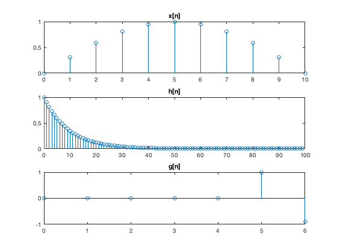

Contents
Lab 5 Christian Ardito SID: 861140154 Jesse Layman SID: 861135479
Professor: Yingbo Hua, TA: Qiping Zhu, EE110B-023
%%Task 1: x[n] = sin(pi*n/10)(u[n]-u[n-10]), h[n] = del[n]+0.5del[n-4] + 0.2del[n-7] clear all close all n = 0:10; x = sin(pi*n/10); h = [1, 0, 0, 0, 0.5, 0, 0, 0.2, zeros(1,10)]; y = conv(h,x,'same'); figure subplot(2,1,1) stem(n,x) title('x[n]') subplot(2,1,2) stem(0:length(y)-1,y) title('y[n] = x[n]*h[n]')
Task 2: x[n] = sin(pi*n/10)(u[n]-u[n-10]), h[n] = 0.9^n*u[n], g[n]= del[n-5] - 0.9del[n-6]
clear all n = 0:10; x = sin(pi*n/10); n1 = 0:99; h = 0.9 .^ n1; g = [0, 0, 0, 0, 0, 1, -0.9]; y = conv(h,x); v = conv(y,g); %plots figure subplot(3,1,1) stem(n,x) title('x[n]') subplot(3,1,2) stem(n1,h) title('h[n]') subplot(3,1,3) stem(0:length(g)-1,g) title('g[n]') figure subplot(2,1,1) stem(0:length(y)-1,y) title('y[n] = x[n]*h[n]') subplot(2,1,2) stem(0:length(v)-1,v) title('v[n] = y[n]*g[n]')
task2 continued, finding perfect echo cancellation
g =[1, -0.9]; v = conv(y,g); %plots figure subplot(2,1,1) stem(0:length(g)-1,g) title('g[n]') subplot(2,1,2) stem(0:length(v)-1,v) title('v[n] = y[n]*g[n]')
Task 3:
clear all n = 0:10; x = sin(pi*n/10); n1 = 0:99; h = 0.9 .^ n1 + 0.7 .^n1; y = conv(h,x); %plots figure subplot(3,1,1) stem(n,x) title('x[n]') subplot(3,1,2) stem(n1,h) title('h[n]') subplot(3,1,3) stem(0:length(y)-1,y) title('y[n] = x[n]*h[n]')
task3 continued, finding perfect echo cancellation
n1 = 0:99; g1 = 0.5*0.8.^n1; g2 = [0, -0.8*0.8.^n1]; g3 =[0,0, 0.63/2*0.8.^n1]; g = g1+g2(1:end-1)+g3(1:end-2); v = conv(y,g); %plots figure subplot(2,1,1) stem(0:length(g)-1,g) title('g[n]') subplot(2,1,2) stem(0:length(v)-1,v) title('v[n] = y[n]*g[n]')